Site Report
Aims and Objectives
For this project these were my aims were as follows:
1. To gain knowledge about basics of building a website.
2. To learn about the functionality of a website.
3. To learn GIT and make use of it properly.
4. To test my HTML and CSS skills.
Module: CSY1018 WEB 1
Computing is a field I've been interested in from a very small age. I have always found it amusing and challenging.
When i passed my +2 I was sure that I would be studying computing and I am glad I did. This module is exactly what I have always wanted to study.
I really like learning about the functionality of webpages and this module helps me learn exactly that. I used to think that HTML and CSS only
must not be enough for making a website but I was wrong. Now I have realized how I have to learn.
Creating the website
This page is about the research I have done for doing this project or say about making this website.
As this is my first time making a webpage and using CSS and HTML I had some problems at the beginning.
I didn't even have any idea what to make the webpage look like let alone starting to make one.
But, from the help of my tutor and the internet I got an idea about it.
I then imagined the page I wanted to make and the page required.
Then, I started surfing the internet looking for the design, looking for the inspiration for my webpage.
After a long period of looking through almost all the websites I could find, I then set-up my mind and started making one.
All that time later I finally made up my mind about the looks of the website I wanted to make and this is the result.
Index page and its code
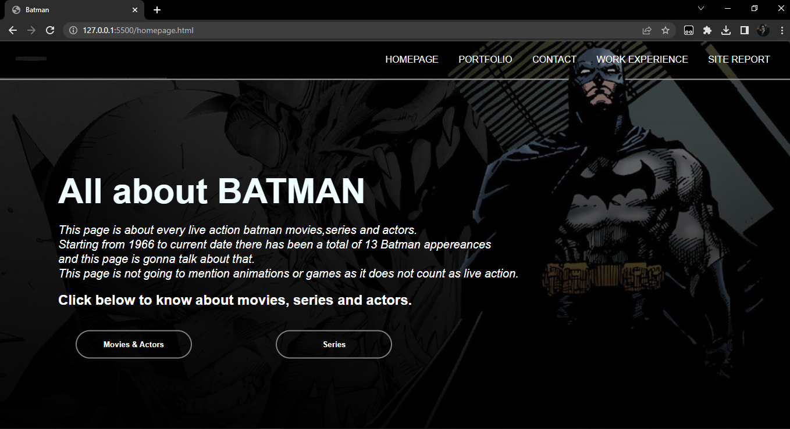 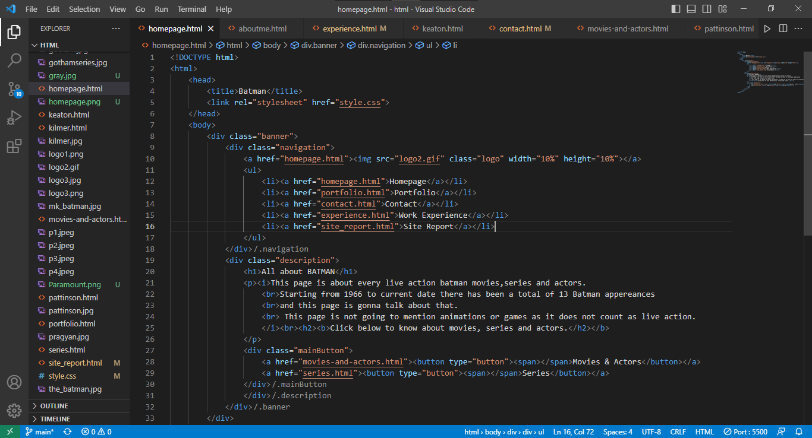Portfolio page and its code
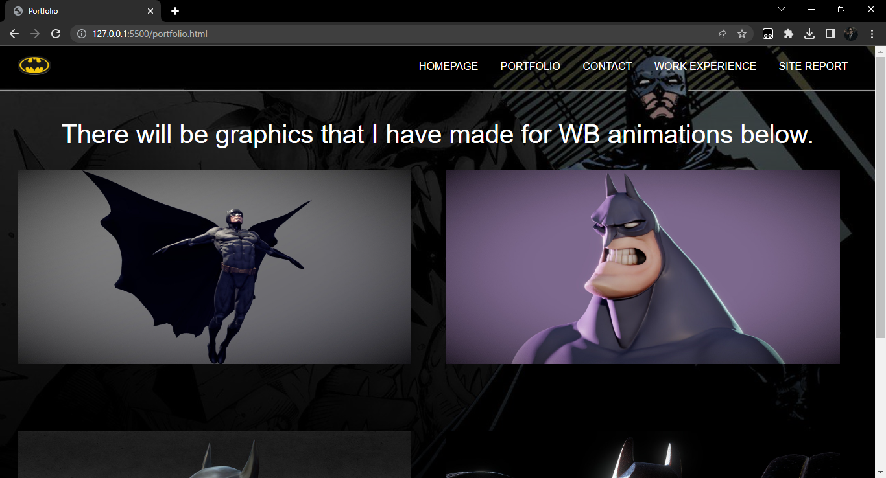 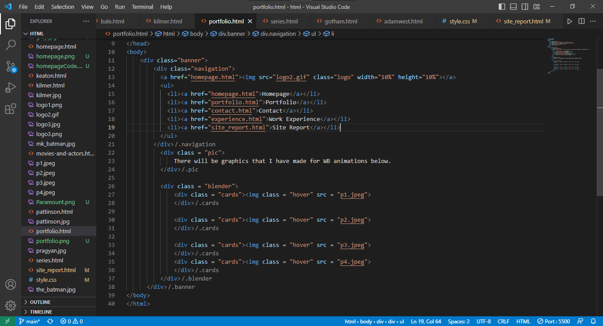Contact page and its code
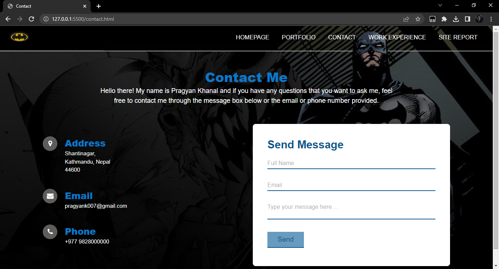 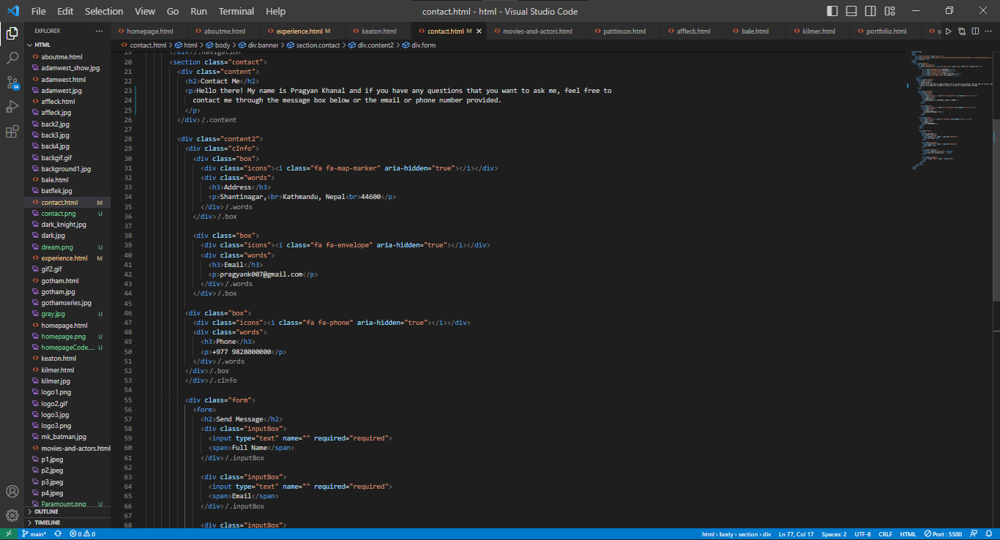Work experience page and its code
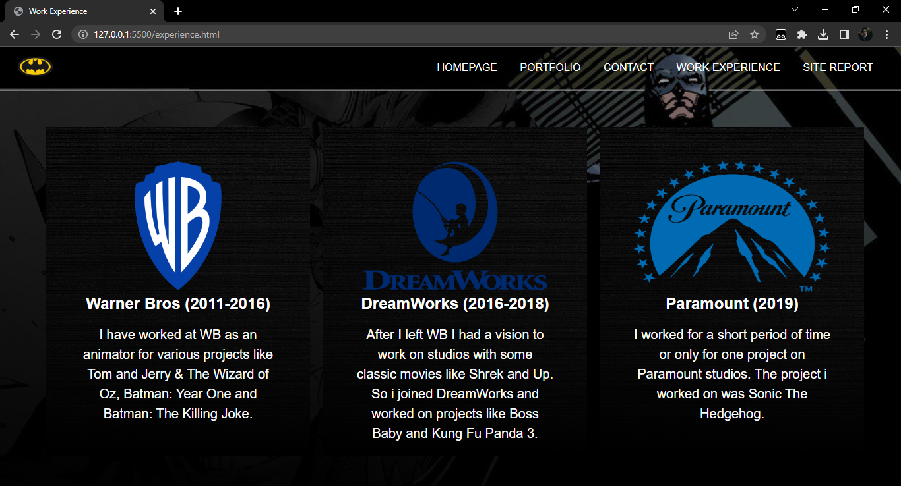 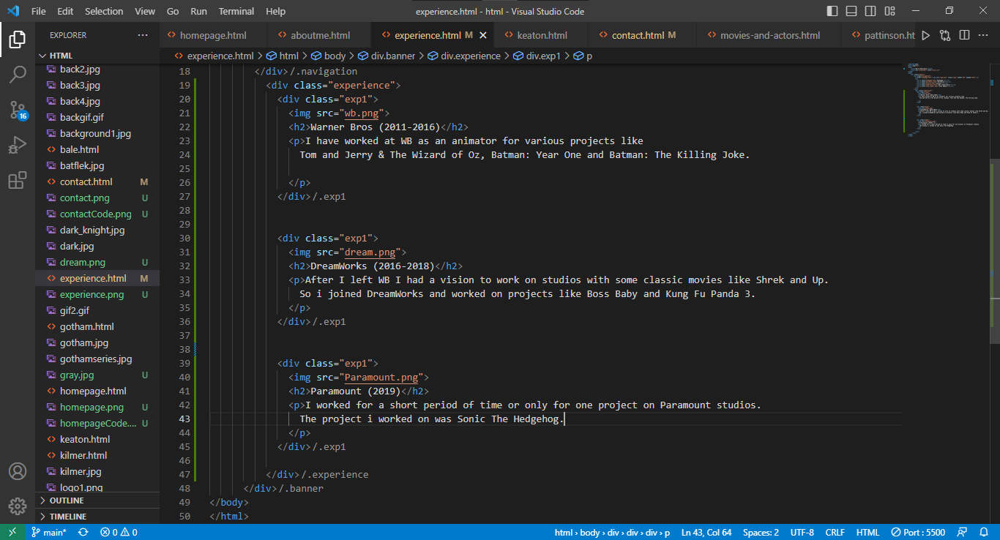Validation
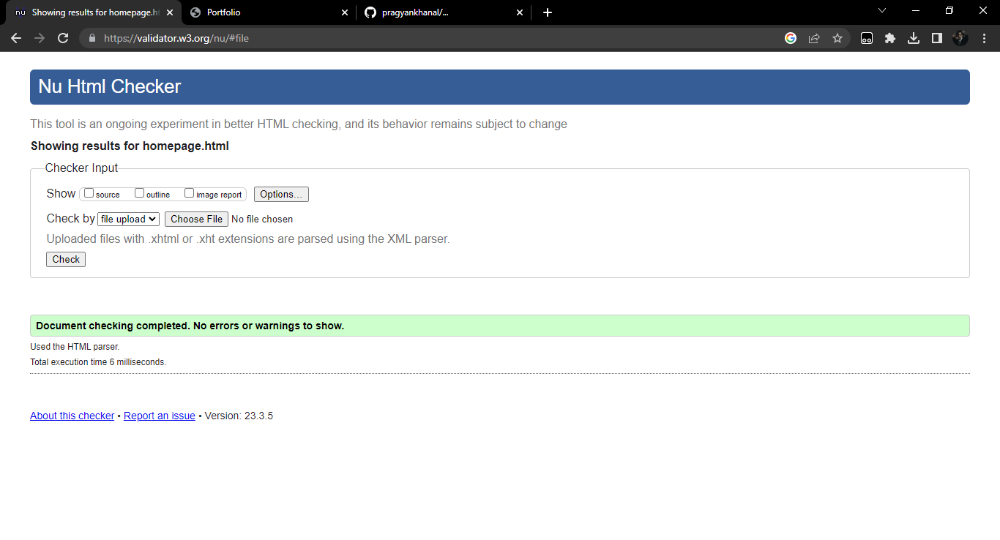 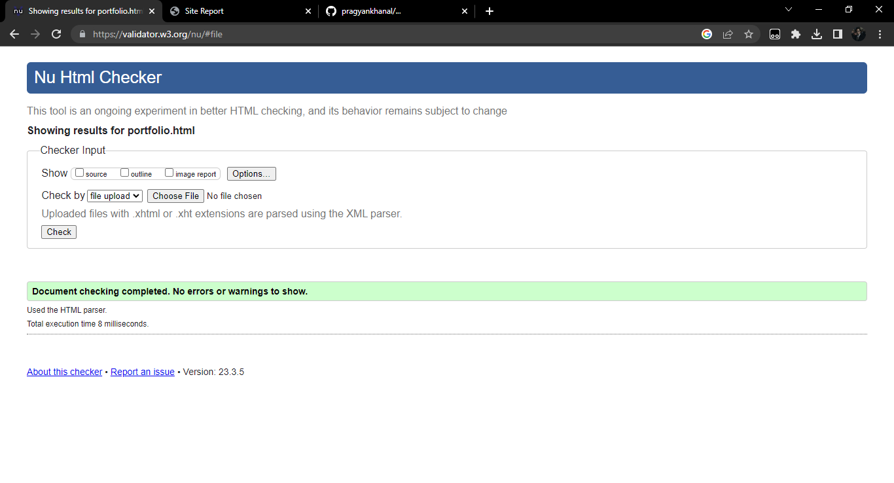 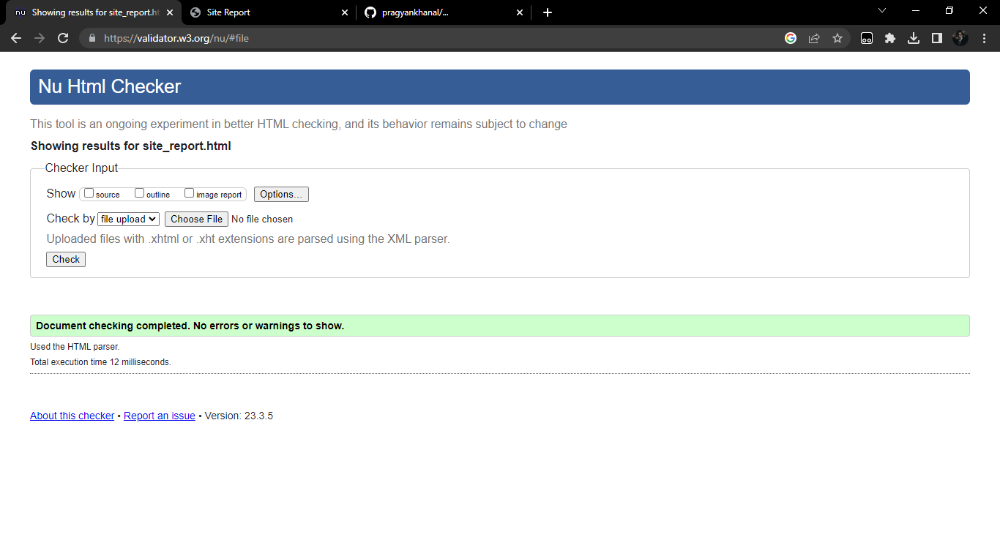
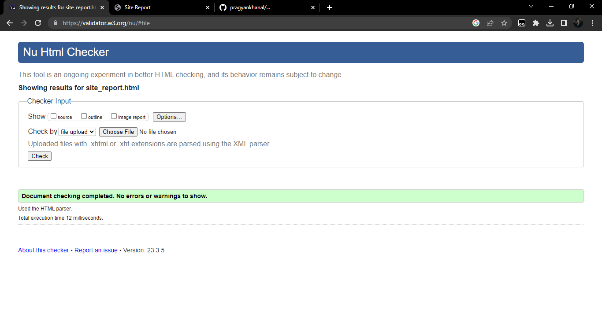
References
-
https://www.w3schools.com/html/,(2023). HTML Tutorial [Online] Available at:
https://www.w3schools.com/html/ - https://www.youtube.com/@EasyTutorialsVideo. HTML Tutorial Videos [Online] Available at: https://www.youtube.com/@EasyTutorialsVideo
P.S-In some code images of the webpage the top part which containts the code for navigation bar is not shown
because it is the same code for all pages. Also showing that part of the code didn't have space for the bottom part
which has the important codes.